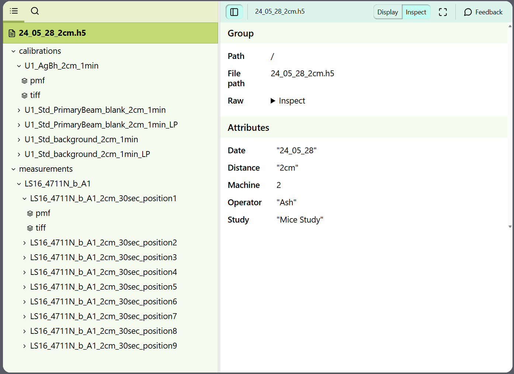
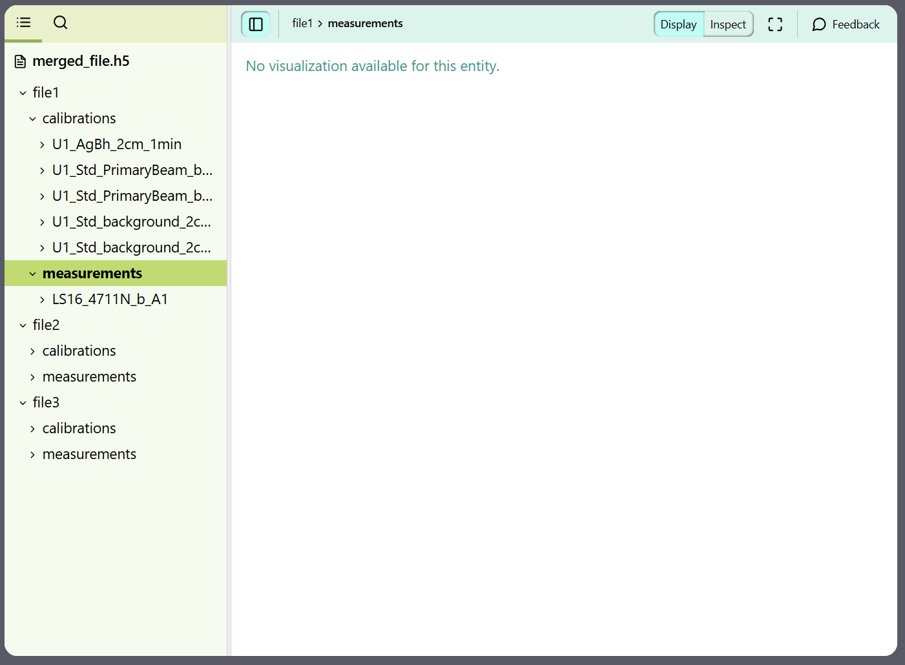

HDF5 File Structure¶
This document provides a brief overview of the HDF5 file structure, focusing on Groups, Datasets, and Attributes.
Introduction¶
HDF5 (Hierarchical Data Format version 5) is a versatile data model that can represent complex data relationships. An HDF5 file is organized in a hierarchical structure similar to a file system, consisting of:
Groups: Container structures, similar to directories.
Datasets: Multidimensional arrays of data, similar to files.
Attributes: Metadata associated with groups and datasets.
Theory¶
Groups¶
Groups in HDF5 are analogous to directories in a file system. They are used to organize and store other groups or datasets. Each HDF5 file has a root group (/), which is the starting point of the hierarchy.
Creating Groups: Groups can be created using the create_group method.
Navigating Groups: You can access subgroups or datasets using a path-like syntax.
Example:
import h5py
with h5py.File('example.h5', 'w') as file:
group = file.create_group('group1')
subgroup = group.create_group('subgroup1')
Datasets¶
Datasets are the primary structures in HDF5 used to store data. They are similar to files but contain multidimensional arrays of a homogeneous data type.
Creating Datasets: Datasets can be created using the create_dataset method.
Accessing Datasets: Datasets can be accessed using their path within the HDF5 file.
Example:
with h5py.File('example.h5', 'w') as file:
data = file.create_dataset('dataset1', (100,), dtype='i')
Attributes¶
Attributes are small named pieces of data attached to groups or datasets. They provide metadata that describes the dataset or group.
Creating Attributes: Attributes can be created using the attrs property of a group or dataset.
Accessing Attributes: You can read or modify attributes using the same attrs property.
Example:
with h5py.File('example.h5', 'w') as file:
dataset = file.create_dataset('dataset1', (100,), dtype='i')
dataset.attrs['description'] = 'This is a sample dataset.'
Application¶
To store the datasets company utilizes HDF5 containers due to their hierarchical structure and its versatility in usage with complex data structures, such as diffraction imagery. Each container is a collection of measurements performed for one study on one machine with a set distance on a specific date, if any of these parameters change, it needs to be put in a separate container.
The following philosophy is followed for the container:
Groups mirror the hierarchical division of measurements.
Datasets store collections of data related to a measurement.
Attributes store any metadata about measurements that is not a collection. Even though attributes can exist on datasets it should be avoided.
Groups¶
Two main Groups that exist in a singular container are Standards and Measurements.
Standards contain information regarding to the quality of data collected. Each type of standard has its own subgroup.
Example of Standards:
Calibration
Background
Beam
Dark
Measurements relate to the tissue measurements that can be used in analysis of data. Measurements are divided into subgroups each relating to a specific sample. Going further as the samples might be measured at different positions each sample is a subgroup on its own.
There were two options as to how to store separate measurements of the same sample. The decision made coincides with the philosophy of storing all metadata as attributes. Moreover, it allows to add any other data to a specific measurement if such need arises. All in all, it’s a balanced decision with the downside of taking more space and being too descriptive.
Datasets¶
Datasets contain collections of data. Currently they are used to store multidimensional arrays of pixels. In the future it will be possible to add different transformations of data to store them on the platform.
Attributes¶
Attributes store the metadata about images that can be stored without relying on collections. Depending on the type of measurement and study the metadata will be different. To avoid redundant metadata, attributes that are common across different entities are placed in the highest-level shared entity.
Here is a non exhaustive list of attributes:
Attributes related to the whole container:
Study
Machine
Date
Operator
Distance
Attributes shared across different types of measurements:
Id
Machine Configuration File
Timestamp
Exposure
Attributes unique to calibration:
Ponifile
Attributes related to sample measurements (this list is non-exhaustive and changes depending on study):
Patient
Sample
Tissue Type
Cancer Diagnosis
Day (For Mice Samples)
Hours Since Inoculation (For Mice Samples)
Thickness (For Thick Samples)
Cohort (For Keele Breast Samples)
Grade (For Keele Breast Samples)
Container Example¶
Here you can see example of a container with Groups and Datasets visible on the left and Attributes for the file visible on the left. In the images Standards are called calibrations due to a typo in container formation.
Combining Multiple Containers¶
For data analysis often more than one container is needed. To accomodate for this requirement its possible to combine multiple containers into one. Each container retains its original structure and gets put into a group inside of a combined container.
Lets imagine that we have three containers that were uploaded at the end of May that we want to combine. The resulting container would look like:
